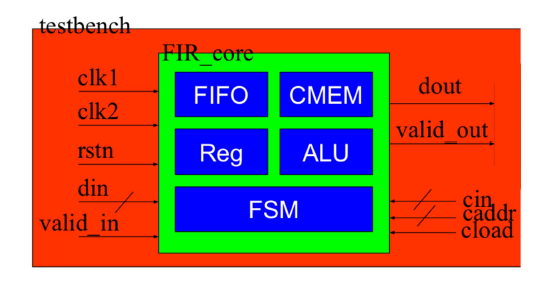
This RTL Implementation of a 64-Tap 16-bit FIR Filter Core was a project completed for Advanced Logic Design (CSEE 4823) in Fall 2025.
Background
A Finite Impulse Response (FIR) filter is a digital signal processing tool that shapes an incoming signal by relying strictly on a finite history of past and present input samples.
Within this filter, a “tap” is a single processing unit consisting of a delay stage register and a coefficient multiplier. Each tap multiplies the current delayed register value x[n-k] by it’s predefined coefficient bk, and an adder sums all of the tapped results together for a single output.
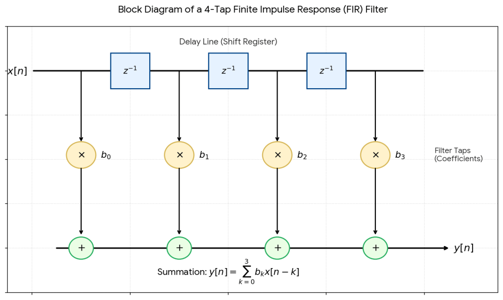
After each unit of time, as the input data moves along, this filter provides a finite window profiling. The coefficients can be set to virtually any discrete impulse response function window, making it highly versatile for custom signal shaping. This is essentially a hardware implementation of the convolution equation where N = 64.
Design Specifications
- Inputs are 16-b Q1.15 fixed-point signed numbers
- Coefficients are 16-b Q1.15 fixed-point signed numbers
- Inputs go to the FIFO/synchronizer at 10 kS/s;
- Output throughput: 10 kS/s; outputs are 16b Q7.9 fixed-point
- Coeff. are pre-loaded (using cin, caddr, and cload I/Os)
- din comes at clk1 (10 kHz) and the core runs at clk2 (you choose the freq)
- Phases of clk1 and clk2 are not synchronized
Design Process and Brainstorm
My approach was to incrementally design and test each anticipated module separately, then integrate them with the FIR Core FSM Controller.
I started by brainstorming the Algorithmic State Machine and Datapath:
Additionally, to ensure my understanding of what an FIR Filter does along with having a model of inputs and outputs for co-simulation testing, I made a “Golden Model” on MATLAB:
function outputY = FIR_function(inputX, inputCoef)% REMEMBER: inputX - input signal (Q1.15 real valued numbers)% inputCoef - coefficients (Q1.15 real valued numbers)% outputY - output signal (Q7.9 real valued numbers) N = 64; % Number of Taps% Ensure the coefficients are of the correct length if length(inputCoef) ~= N error('Coefficient length must match the number of taps (N).'); end x_len = length(inputX);% Getting length of the X for the summation outputY = zeros(1, x_len);% Initialize the output array with zeros% Perform the FIR filtering operation for n = 1:x_len currSum = 0; %To add up the precision for k = 1:N if n-k+1 > 0 currProd = int32(inputX(n-k+1))*int32(inputCoef(k)); % Now 32 bits Q2.30 currSum = currSum + currProd; end end % Q2.30 -> Q7.9 shiftedSum = bitsra(currSum, 21); % Saturate to 16-bit signed integer range for Q7.9 still 32 bit at the time if shiftedSum > int32(32767) shiftedSum = int32(32767); elseif shiftedSum < int32(-32768) shiftedSum = int32(-32768); end outputY(n) = int16(shiftedSum); %Making the final 16bits endend
Like any brainstorm, there were a parts that I overlooked and underestimated! (Being that this was my first RTL based course)
- DATAPATH/ASM
- Currently shifts individual REG bits ONE BY ONE (…yes all 1024 bits)
- Redundant Registers (No need for FIFO/CMEM Registers)
- 1024b single output for CMEM/REG (Unrealistic!)
- Unnecessary 16b 64-1 MUX for CMEM output (Could just add a ReadAddr pin to CMEM that the controller selects for output)
- MATLAB
- Accumulating Sum is 32b (Doesn’t account for potential overflow)
Improved Datapath
MATLAB -> Python Golden Model
*CLICK HERE TO SEE CODE IMPLEMENTATION*
Ultimately switched to a replica Python golden model for ease of use and elimination of silent accumulator overflow during MAC loops without complex manual typecasting.
Design Implementations (REG,CMEM, FIFO, ALU, FSM)
Before starting all of the core modules, I implemented the fundamental building blocks (registers & MUX)
//////////////////////////////////REGISTERS////////////////////////////////module shiftrne (R, L, E, w, Clock, Q); parameter n = 16; input [n-1:0] R; input L, E, w, Clock; output reg [n-1:0] Q; integer k; always @(posedge Clock) begin if (L) begin Q <= R[n-1] ? ~R+1 : R; // Load input (ALWAYS POSITIVE) //$display("Positive B: %b", Q); end else if (E) begin // Shift right with new bit inserted at MSB for (k = n-1; k > 0; k = k-1) Q[k-1] <= Q[k]; Q[n-1] <= w; // Insert shift-in bit at MSB end endendmodulemodule shiftlne (R, L, E, w, Clock, Q); parameter n = 16; input [n-1:0] R; input L, E, w, Clock; output reg [n-1:0] Q; integer k; always @(posedge Clock) begin if (L) begin Q <= R[n-1] ? ~R+1 : R; //$display("Positive A: %b", Q); end else if (E) begin // Shift left with new bit inserted at LSB for (k = 0; k < n-1; k = k+1) Q[k+1] <= Q[k]; Q[0] <= w; // Insert shift-in bit at LSB end endendmodulemodule regne (R, Clock, Resetn, E, Q); parameter n = 16; input [n-1:0] R; input Clock, Resetn, E; output reg [n-1:0] Q; always @(posedge Clock, negedge Resetn) begin if (!Resetn) Q <= {n{1'b0}}; // Reset to 0 else if (E) Q <= R; // Load when enabled endendmodule//////////////////////////////////MULTIPLEXER////////////////////////////////module mux64to1 (Q_chain, sel, Y); parameter N = 16, NUM_EG = 64; input wire [NUM_REG*N-1:0] Q_chain; input wire [5:0] sel; output wire [N-1:0] Y; // selected 16-bit output // Extract selected 16-bit slice assign Y = Q_chain[sel*N +: N];endmodule
For each main core implementation I went through the following testing pipeline to ensure expected behavior: Testbench I/O -> QuestaSim w/ RTL -> QuestaSim w/ Synthesis -> PrimeTime Timing/Power Analysis
FIR CORE ALU
RTL Design Overview
*CLICK HERE TO SEE CODE IMPLEMENTATION*
The FIR core ALU was designed according to the Datapath to verify functional correctness using a controlled set of inputs and coefficients loaded from external MATLAB-generated files.
TESTBENCH SETUP
Parameters: 16-bit data width (n = 16), 8 FIR taps (N = 8), 10 input samples (NUM_INPUTS = 10).
Clock Generation: A 40 ns half-period clock was generated to drive the ALU.
Testing I/O (Comparing to InputXBinary.txt, InputCoefBinary.txt, OutputYBinary.txt )
Input Samples (inputX) – 10 values:
inputX[0] = 16’h4000, inputX[1] = 16’hC000, inputX[2] = 16’h4000, inputX[3] = 16’hC000, inputX[4] = 16’h4000, inputX[5] = 16’hC000, inputX[6] = 16’h4000, inputX[7] = 16’hC000, inputX[8] = 16’h4000, inputX[9] = 16’hC000
FIR Coefficients (inputC) – 8 taps:
inputC[0] = 16’h1000, inputC[1] = 16’h2000, inputC[2] = 16’h3000, inputC[3] = 16’h4000, inputC[4] = 16’h5000, inputC[5] = 16’h6000, inputC[6] = 16’h7000, inputC[7] = 16’h8000
Expected Output (outputY):
The golden model creates OutputY_Binary.txt, the expected computational outputs for the FIR Core.
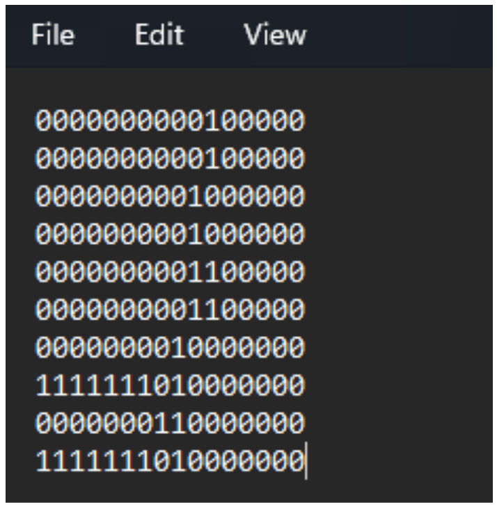
The ALU output for each sample is written to the output file and displayed in both binary and decimal formats. Each output is compared against MATLAB reference values from OutputY_Binary.txt, reporting either a match or a mismatch.
RTL Simulation (QuestaSim)
The current design verilog + testbench)
Testbench output verification:
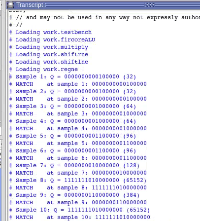
Waveform results (matching qsim_out and matlab_y & transition from output 9 to output 10)
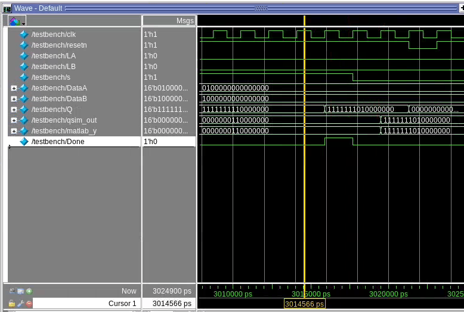
Gate-Level Simulation Post Synthesis/DC Netlist (QuestaSim)
Clock Period Adjustment: Increased to 80 ns to accommodate SDF delays.
Verification: Outputs identical to RTL simulation; matching qsim_out and matlab_y & transition from output 9 to output 10
Waveform Verification/Screenshots:
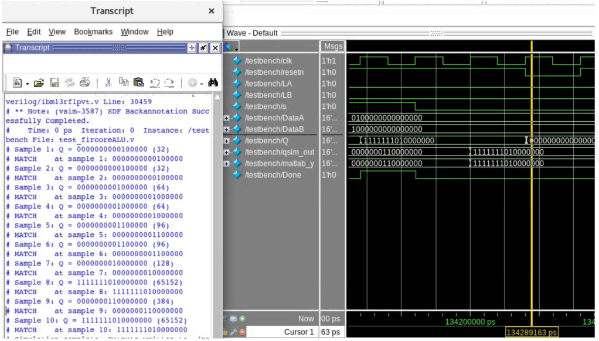
Timing and Power Analysis (PrimeTime)
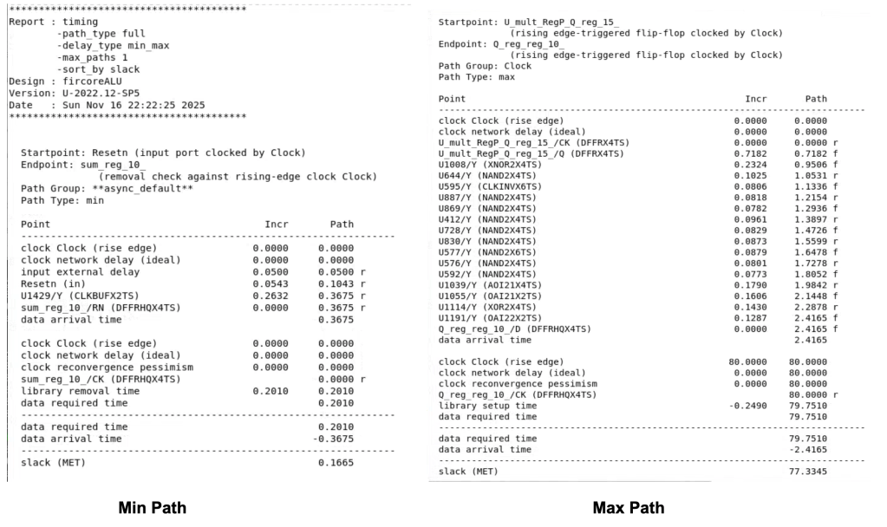
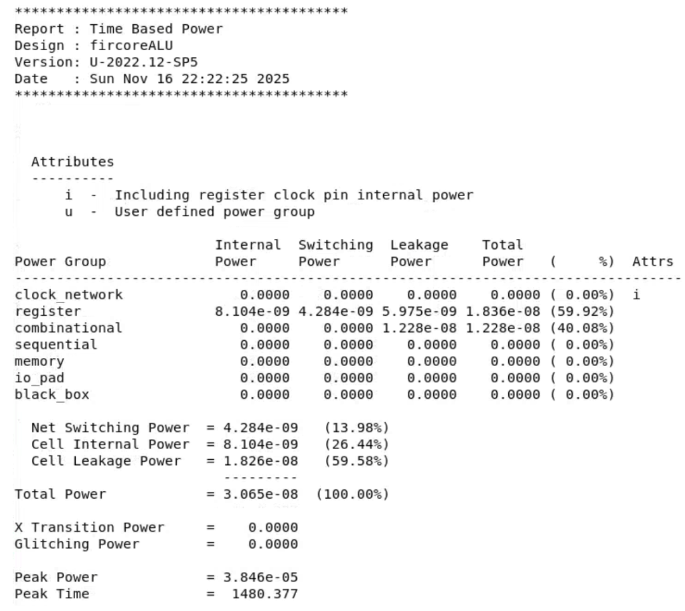
FIR CORE REG
RTL Design Overview
*CLICK HERE TO SEE CODE IMPLEMENTATION*
- Design: 16-bit width (N = 16), 64 registers linked sequentially (NUM_REG = 64)
- Functionality: Stores sequential input samples. After 64 entries, the oldest values are overwritten in a circular manner.
- MUX Output: Individual registers read back via a 64:1 multiplexer with a select input.
- Testbench Scenario: 74 input samples loaded sequentially to test queue behavior.
TESTBENCH SETUP
- Clock Generation: 20 ns period (10 ns half-period)
- Input Loading: 74 sequential values (0 … 73)
- Enable Signal (E): Pulsed for one cycle during each input load
- Output Verification: All registers read back via MUX and written to qsim_rtl.out, should be 73 to 10 for registers 0 through 63.
RTL Simulation (QuestaSim)
- Observation: Waveforms show sequential loading of 74 samples into 64 registers; oldest values overwritten as expected.
- Verification: MUX outputs confirmed correct for all registers.
Waveform/Verification Screenshots:
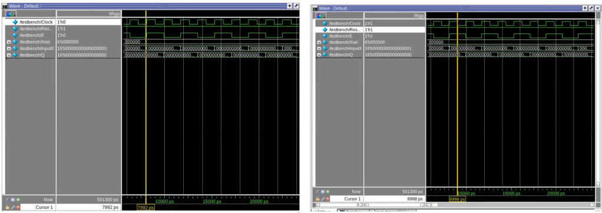
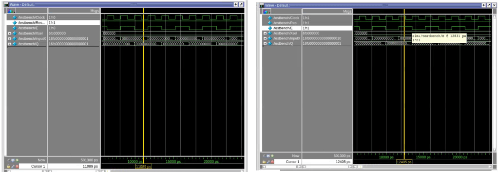
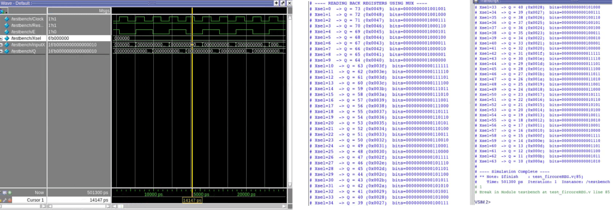
Gate-Level Simulation Post Synthesis/DC Netlist (QuestaSim)
- Clock Period Adjustment: Increased to 80 ns to accommodate SDF delays.
- Verification: Outputs identical to RTL simulation; wrap-around/shift behavior confirmed.
Waveform results:
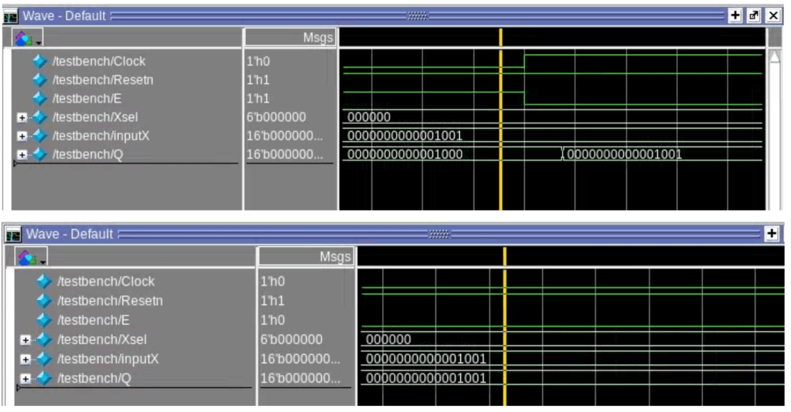
Timing and Power Analysis (PrimeTime)
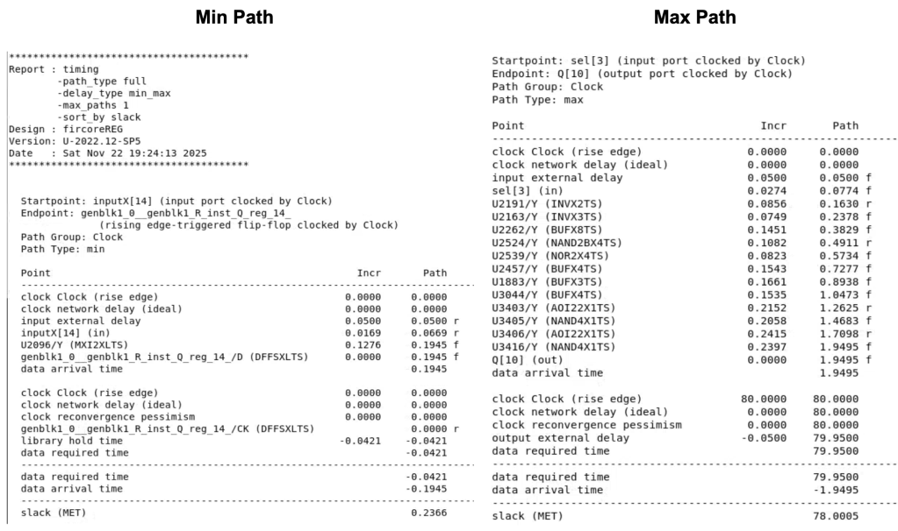
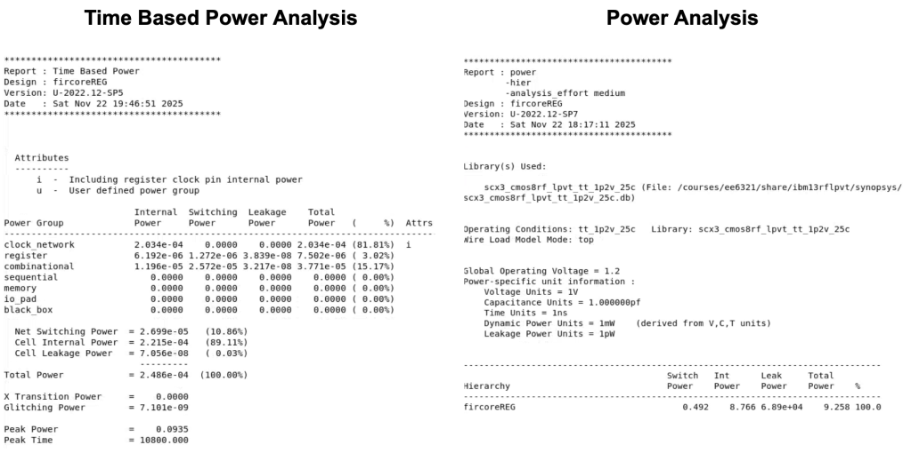
FIR CORE CMEM
RTL Design Overview
*CLICK HERE TO SEE CODE IMPLEMENTATION*
- Design: 16-bit width (N = 16), 64 length internal memory with read-out and write-in pins.
- Functionality: Stores coefficients that are written to memory with the capability of reading out specific memory with a read-out pin
- Testbench Scenario: Inputs and coefficients
TESTBENCH SETUP
- Clock Generation: 80 ns period to accommodate SDF timing for gate-level simulation
- FIR Coefficients: 64 taps from MATLAB
- Output Verification: Reading the memory address before and after “cin” is written
RTL Simulation (QuestaSim)
- Observation: After two clock cycles, the written memory is able to be read.
- Verification: The correct outputs matched in all 64 registers.
Waveform/Verification Screenshots:
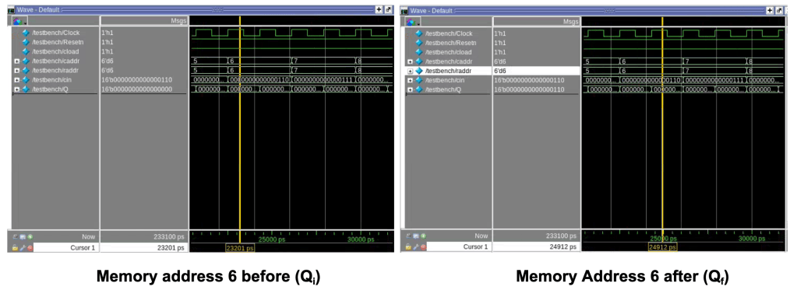
Gate-Level Simulation Post Synthesis/DC Netlist (QuestaSim)
- Clock Period Adjustment: Increased to 80 ns to accommodate SDF delays.
- Verification: Outputs identical to RTL simulation; wrap-around/shift behavior confirmed.
Waveform results:
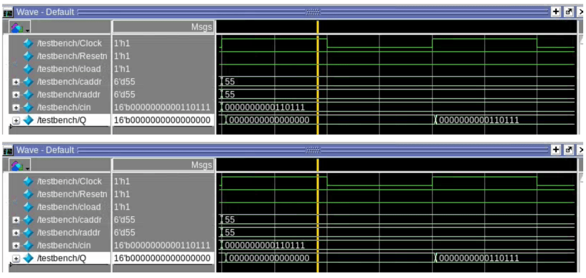
Timing and Power Analysis (PrimeTime)
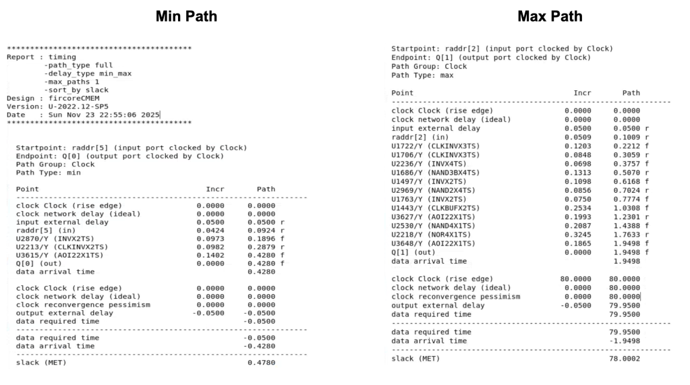
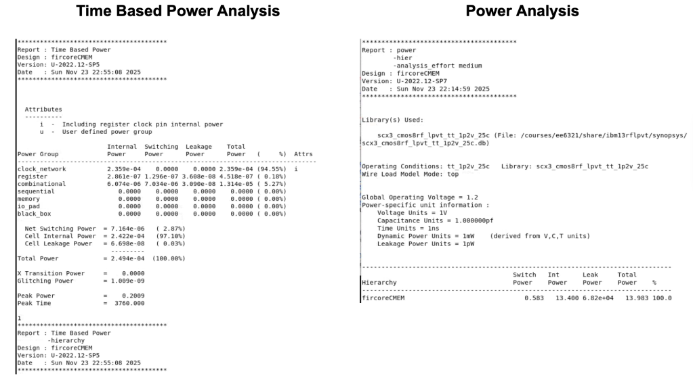
FIR CORE FIFO
RTL Design Overview
*CLICK HERE TO SEE CODE IMPLEMENTATION*
- Design: A two-flip-flop synchronizer with edge detection used to transfer a valid_in signal into a second clock domain safely. The second clock is faster than the first clock.
- Functionality: This core loads the value of “din” into an internal register at the clock1 edge if valid_in is high. The second clock domain checks for the rising edge of valid_in, waits for a few clock2 cycles (to protect against metastability), and outputs whatever was in the internal register along with a valid_out signal for the REG core.
- Testbench Scenario: The testbench is set up to have a valid_in high signal coordinated with the negative edge of Clock1. This ensures that when the next positive edge of Clock1 occurs, it loads whatever was in “din” and then Clock2 follows by outputting it later in the same cycle.
TESTBENCH SETUP
- Clock Generation: {Clock1} 40 ns period, {Clock2} 4 ns period
- Input Loading: Starts with 0 and cycles through to 5
- Enable Signal (Valid_in): Occurs at the negedge of Clock1 until the posedge
- Output Verification: It’s correct if after a “din” load occurs (@posedge Clock1) while valid_in is HIGH, the next half cycle, where it transitions to (@negedge Clock1), there is a valid_out HIGH pulse along with a change in the Q output to reflect “din.”
RTL Simulation (QuestaSim)
- Observation: The RTL works as expected with a valid_out pulse corresponding with an output Q of the “din” that was loaded in the previous (@posedge Clock1), where valid_in was HIGH.
Waveform/Verification Screenshots:
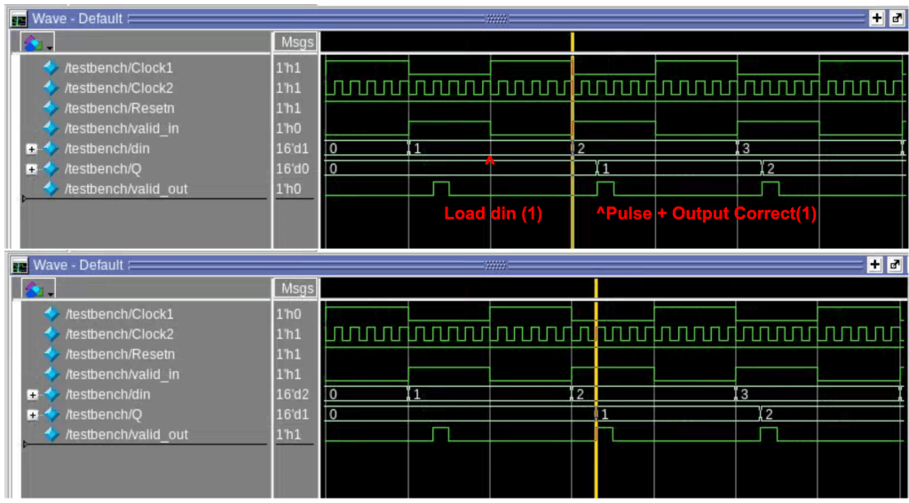
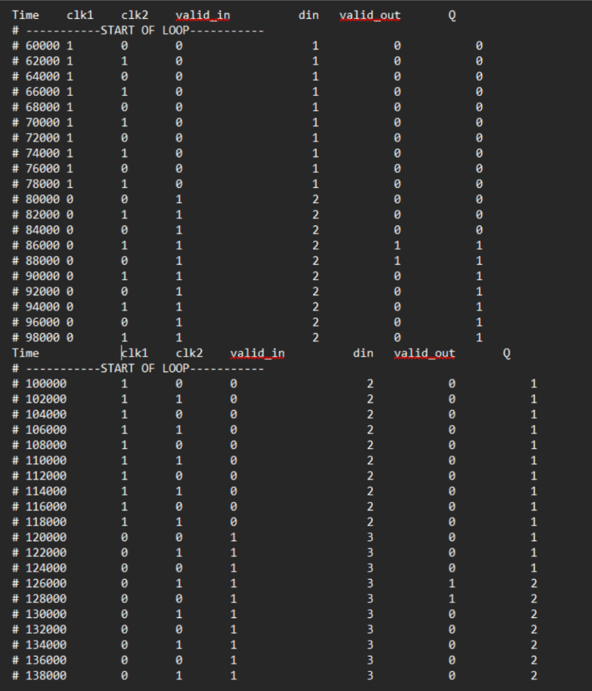
Gate-Level Simulation Post Synthesis/DC Netlist (QuestaSim)
- Clock Period Adjustment: Made the period of Clock2 80ns to satisfy the synthesis (and be in line with the rest of our core components thus far)
- Verification: The behavior of the core is as expected and consistent with the RTL simulation. There are delays and glitches as seen in the last two figures, but that is the nature of the qsim_dc waveforms.
Waveform results:
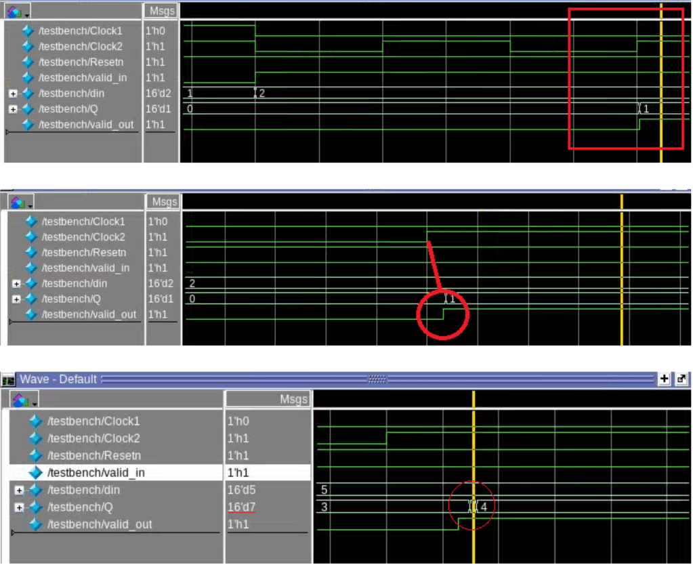
Timing and Power Analysis (PrimeTime)
In the FIFO implementation, there were no timing issues or any unusually high power usage. This can help determine the optimal clk2 frequency. For the areas in the DC synthesis, the FIFO had a cell area of (1831.68).
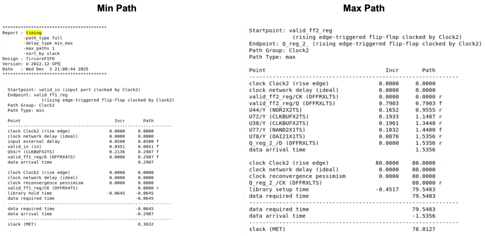
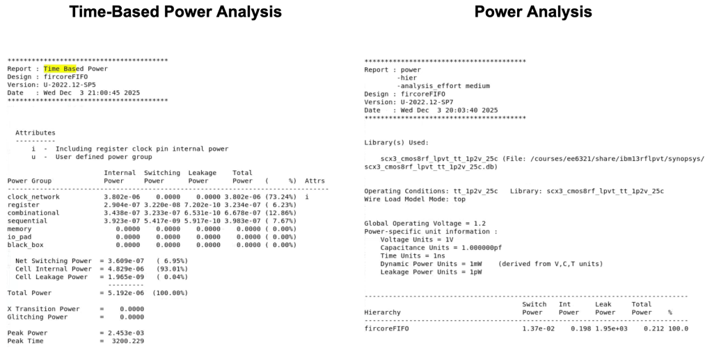
FIR CORE (Full Integration with FSM)
RTL Design Overview
*CLICK HERE TO SEE CODE IMPLEMENTATION*
- Design: A 64-tap Finite Impulse Response (FIR) filter implementing the convolution equation y[n] = ∑bi x[n-i] . The system employs a dual-clock architecture, comprising a slow Input Domain (clk1) for data ingestion and a fast Processing Domain (clk2) for multiply-accumulate operations.
- Functionality: This core loads the value of “din” into an internal register at the clock1 edge if valid_in is high. The second clock domain checks for the rising edge of valid_in, waits for a few clock2 cycles (to protect against metastability), and outputs whatever was in the internal register along with a valid_out signal for the REG core. For every new input, the FSM triggers a loop that iterates 64 times. It selects a value from the Register Chain and the Coefficient Memory (CMEM), multiplies them using a custom Sign-Magnitude ALU, accumulates the result in a 40-bit register, and finally performs an arithmetic shift (>>21) and saturation to produce a Q7.9 output.
TESTBENCH SETUP
- Clock Generation: clk1 set to 1 kHz (Input Rate as specified), clk2 set to ~17 MHz (Processing Rate). This ratio allows sufficient time for the 64-cycle MAC operation between inputs.
- Reference Generation: A MATLAB script was used to generate bit-exact golden reference vectors. It produced random Q1.15 inputs (InputX), Q1.15 coefficients (InputCoef), and the calculated Q7.9 outputs (OutputY_Ref).
- Test Sequence:
- Reset: System reset applied.
- Configuration: 64 Coefficients loaded into CMEM via the configuration bus.
- Streaming: 1000 random input samples streamed back-to-back.
- Verification Method: The testbench captures the core’s output (dout) whenever valid_out is high and compares it against the golden reference file (OutputY_Ref.txt). A match percentage is calculated at the end of the simulation.
RTL Simulation (QuestaSim)
ISSUE FOUND!
In matching the outputs, found that there were PLENTY of mismatches starting ~Sample 14
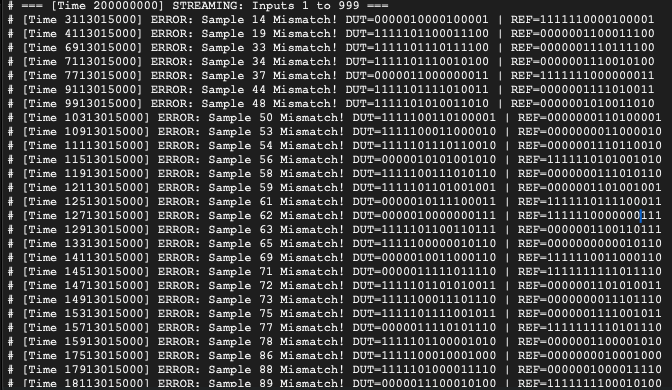
Fist instinct was that it had to do with the FSM seeing as that was the only additional component to the existing tested out system. But looking closer at the mismatches I saw that they follow a very specific pattern: The lower bits match, but the upper bits (Sign bits) are flipped.
For example at Sample 14:
- DUT (Verilog):
0000010000100001(Positive number) - REF (Python):
1111110000100001(Negative number)
Seeing that these remained identical at the 10 lower bits made me look to the shifting mechanism in the ALU (We shifted 32b Product Sum >> 21 -> Mismatch starts @ Bit 11).
But it passed all of the tests in the ALU testing, right? Yes, but looking closer at what was actually tested, it never reaches a 14th sample since the input was only 10 samples (Initially did this because it was easier to calculate each output by hand to verify both the model and the ALU).
At some point maybe there’s be an overflow issue? Looking at the structure of the ALU it could be pinpointed to the accumulator ‘sum’
reg signed [31:0] sum;
When adding two 32-bit signed numbers (sum + $signed(P)), the result can exceed 32 bits. Because sum was only 32 bits wide, any overflow bit would be discarded before the shifting. Expanding it to a 33-bit signed register helps prevent overflow in the MAC step. After this the matches were back to 100%
LESSON LEARNED: Always stress-test with realistic vector lengths and edge-case dynamic ranges before moving to the next level of integration!
AFTER FIX
- Observation: The core successfully processed all 10000 samples in 1 second with no mismatches to the golden model. The waveforms show the correct “burst” behavior: valid_in triggers the FSM and the arithmetic loop, ending with a single valid_out pulse. The valid_out occurs 77490 ns from the clk1 posedge.
- Throughput: 10 kS/s
- Accuracy: 100%
Waveform/Verification Screenshots (AFTER FIX):
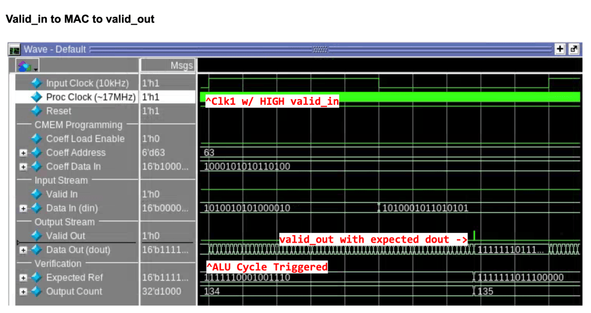
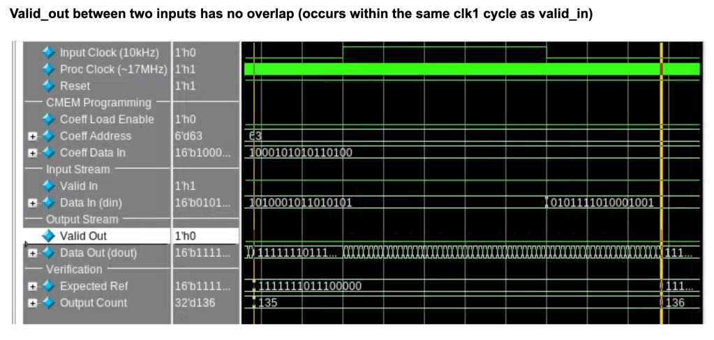
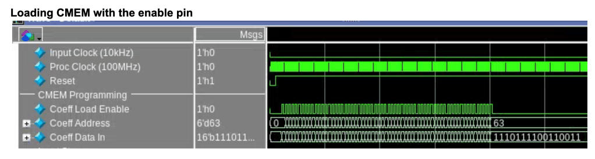
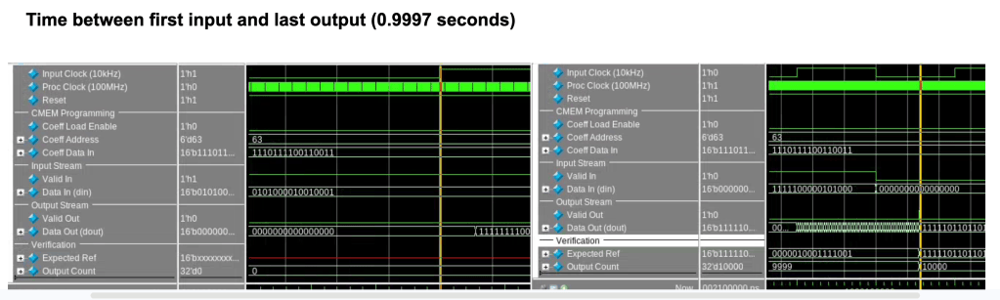
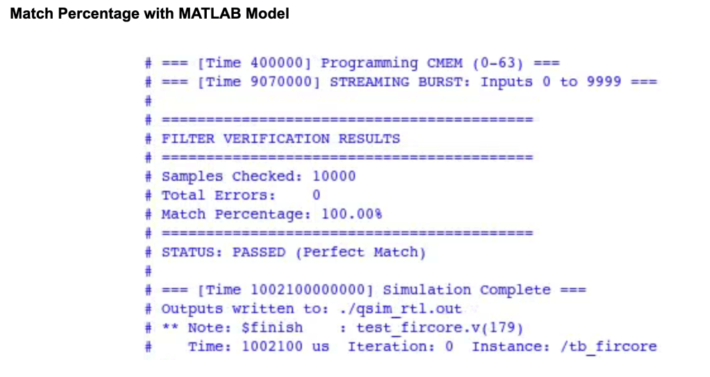
Gate-Level Simulation Post Synthesis/DC Netlist (QuestaSim)
- Sample Adjustment: Because of the length of time it takes for the DC simulation, I changed the number of samples to 1000 so it could be completed in a reasonable time.
- Verification: The post-synthesis netlist behaved identically to the RTL model. The testbench reported 0 mismatches against the reference file. The waveform displays characteristic gate delays and minor glitches on combinational logic lines (ALU product), but the registered outputs (dout, valid_out) remained stable and correct at the capture edges.
Waveform results:
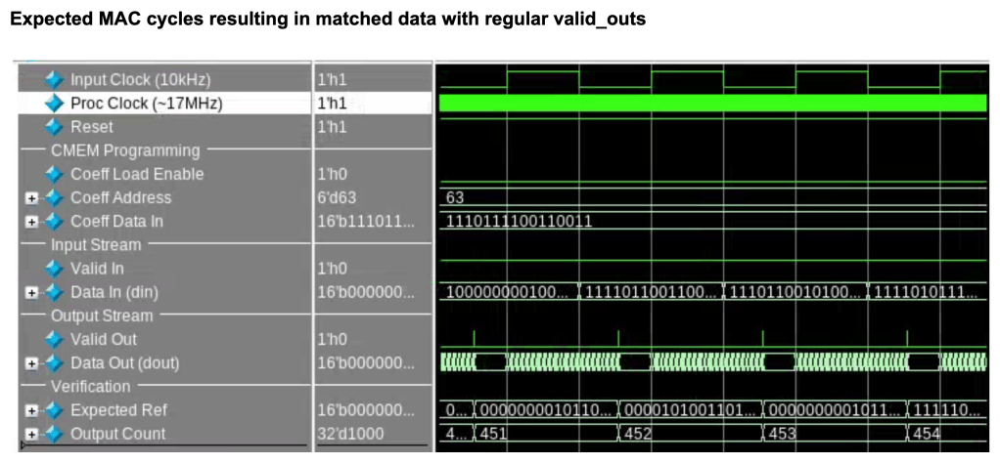
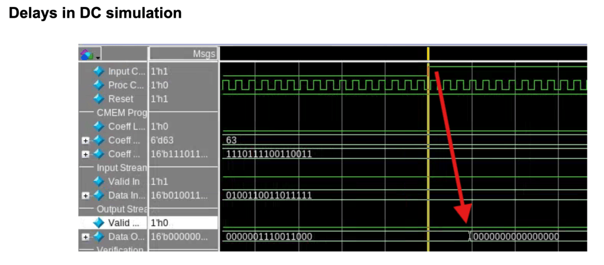
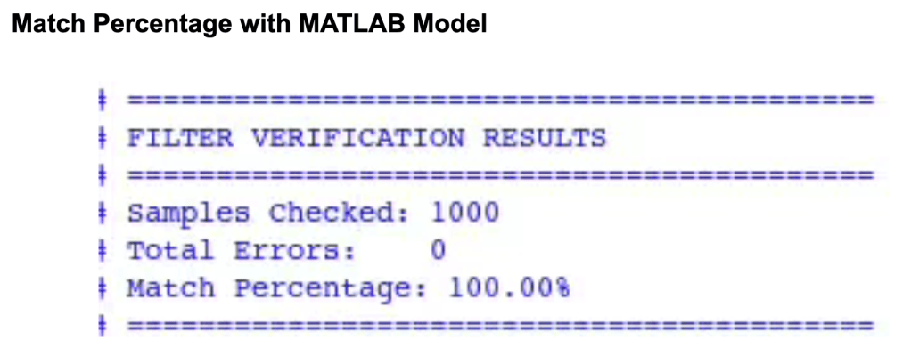
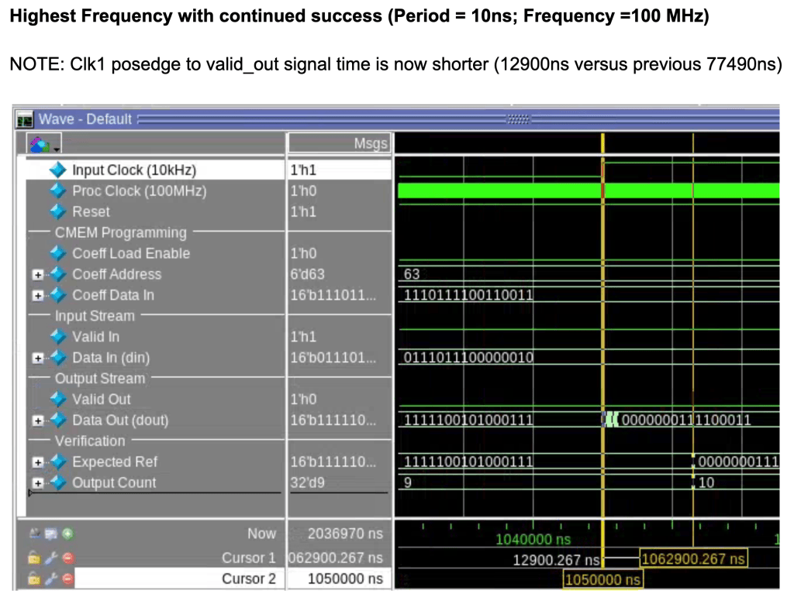
Timing and Power Analysis (PrimeTime)
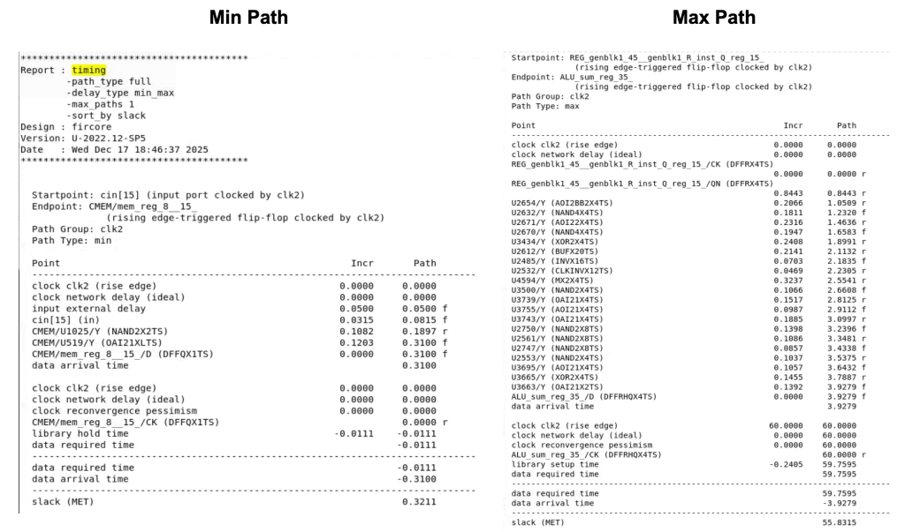
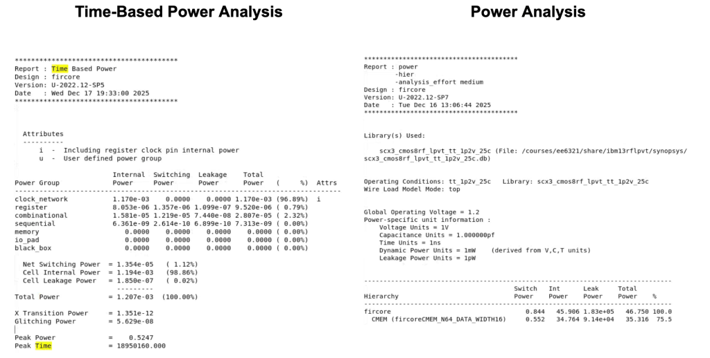
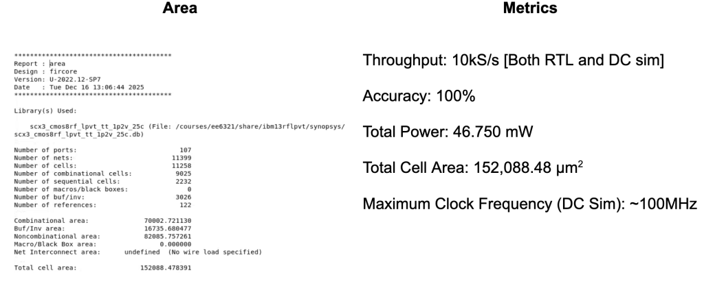
Flow from Input -> Output
Here is the execution flow, from sample arrival to output generation:
Initialization & Input Ingestion
- Pre-loading Coefficients: The 64 filter coefficients are written into CMEM using
cload,caddr, andcinonclk2. - Clock-Domain Crossing (FIFO): A new 16-bit input sample
dinarrives in the slow domain (clk1) withvalid_in = 1. The FIFO synchronizes this across domains and assertsvalid_outfor one cycle in the fast domain (clk2). - Shift Delay Line: That single-cycle
valid_outenables the REG block (E = 1), shifting all 64 previous samples forward by one register and latching the newest sample intoReg1. - FSM Trigger & Accumulator Reset: The FSM detects
start_calc(valid_out), resets its loop counter (loop_cnt = 0), and assertsacc_clr = 1to wipe the ALU’s 33-bitsumregister to zero.
The 64-Tap Calculation Loop (Repeats 64 Times)
For each tap index (0 through 63):
- Select Operands (
LOAD_VARS):- FSM outputs
addr_sel = loop_cnt. - The 64-to-1 MUX selects sample X[k] (
DataA), and CMEM looks up coefficient B[k] (DataB). - FSM pulses
LA = 1andLB = 1to load their absolute magnitudes into shift registersShiftAandShiftB.
- FSM outputs
- Execute Multiplier (
EXECUTE->WAIT_DONE):- FSM sets
s = 1to kick off the shift-and-add multiplier. - Shift-and-Add: Each cycle, if
bpos[0] == 1, A adds intoPROD; A shifts left by 1 and B shifts right by 1. - Early Exit: Once all bits of B are zero (Z = 1), the multiplier asserts
Done_mul = 1.
- FSM sets
- Sign Correction & Accumulate:
- The multiplier XORs the original sign bits of A and B, converting the product back to negative two’s complement if only one input was negative (
assign P = (Aneg ^ Bneg) ? ~Pint + 1 : Pint). - The ALU detects
Done_muland immediately adds product P to the running filter total: sum -> sum + P - The ALU pulses its top-level
Doneflag for one cycle.
- The multiplier XORs the original sign bits of A and B, converting the product back to negative two’s complement if only one input was negative (
- Step Counter (
RESET_MUL):- The FSM sees
alu_done, setss = 0to reset the multiplier, incrementsloop_cntby 1, and branches back to load the next tap.
- The FSM sees
Final Quantization & Output
- Scale and Format (
Q2.30->Q7.9):- As the last tap adds into
sum, the ALU arithmetically shifts the 33-bit sum right by 21 bits. - The lower 16 bits of this shifted result are latched into
Q_reg(dout).
- As the last tap adds into
- Output Strobe (
DONE):- After tap 63 completes, the FSM transitions to
DONE, assertingvalid_out = 1for one cycle to indicate that filtered sampledoutis valid. - The FSM returns to
IDLEto await the next sample from the FIFO.
- After tap 63 completes, the FSM transitions to